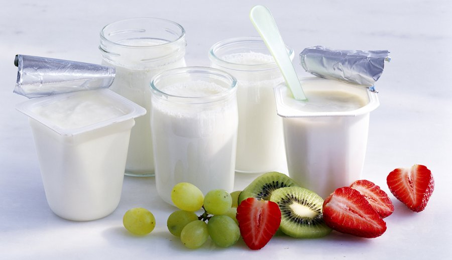
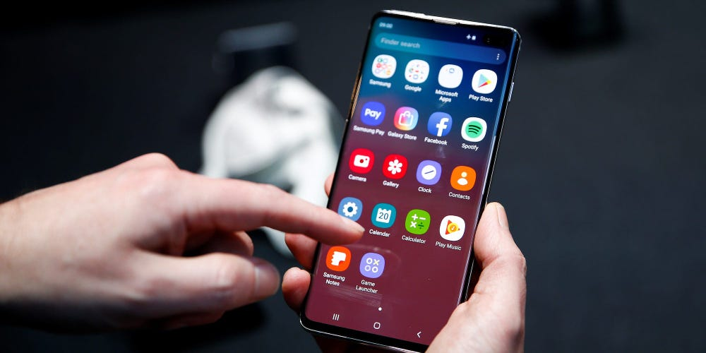

LỘ DIỆN SIÊU NĂNG LỰC TỪ TRÁI XOÀI!

Xoài là một trong những cây ăn trái chủ lực của Đồng bằng Sông Cửu Long(ĐBSCL), chiếm khoảng 48% diện tích xoài cả nước. Trong đó, tỉnh Đồng Tháp hiện có diện tích trồng xoài khoảng 12.171ha-lớn nhất ĐBSCL với sản lượng hằng năm gần 124 ngàn tấn. Xem chi tiết
SỮA CÁC LOẠI HẠT-MÓN NGON CHO HỆ MIỄN DỊCH KHOẺ

Các loại sữa hạt ngày càng trở nên quen thuộc với mọi người, bởi hàm lượng dinh dưỡng cao, và lành tính. Với thị trường đa dạng sữa hạt phong phú, hôm nay chúng ta cùng điểm qua có các loại sữa hạt nào, và loại nào là bổ dưỡng nhất cho sức khoẻ? Xem chi tiết
SỮA CHUA KIWI-MÓN QUÀ CHO SỨC KHOẺ

KiWi thành phần dinh dưỡng rất cao so với các loại quả khác. Hàm lượng vitamin C cao cho hệ miễn dịch khoẻ mạnh cùng nguồn chất xơ hỗ trợ hệ tiêu hoá. Siêu quả KiWi cho cả nhà khoẻ, 100% Vitamin C cần thiết mỗi ngày. Xem chi tiết
RA MẮT APP SỮA CHUA Freeeze TRÊN NỀN TẢNG IOS

Nhằm đem đến cho khách hàng những trải nghiệm thú vị nhất, Công ty sữa chua Freeeze giới thiệu app đặt hàng độc đáo, giúp khách hàng mua sắm được mọi lúc mọi nơi với nhiều tiện ích Xem chi tiết
ĐĂNG KÝ THÀNH VIÊN-NHẬN NGAY ƯU ĐÃI

Công ty sữa chua hân hạnh mang đến chương trình "Đăng Ký Thành Viên" với nhiều ưu đãi độc đáo.Member-Card-thẻ thành viên nhà Sữa Chua Freeeze dành cho tất cả khách hàng đăng ký tài khoản và phát sinh đơn hàng. Xem chi tiết
TUYỂN GIÁM SÁT CHUỖI CỬA HÀNG
Tuyển Giám Sát chuỗi cửa hàng:-tại TP Hải Phòng & các tỉnh lân cận - Số lượng : 01 Mô tả: Giám sát hoạt động kinh doanh các cửa hàng. Kiểm tra lịch làm việc của các cửa hàng Xem chi tiết